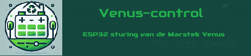

Actueel
Grafieken
Handmatig
Config
Logging
Over

** Venus-control **
** ESP32 besturing voor Marstek Venus **
** via ModBus **
Lees de
documentatie
voor meer details.
Let op de knop "More Pages" onderaan de laatste pagina.
Ontwikkeld door Ed Smallenburg (ed@smallenburg.nl)
Datum: April 2025